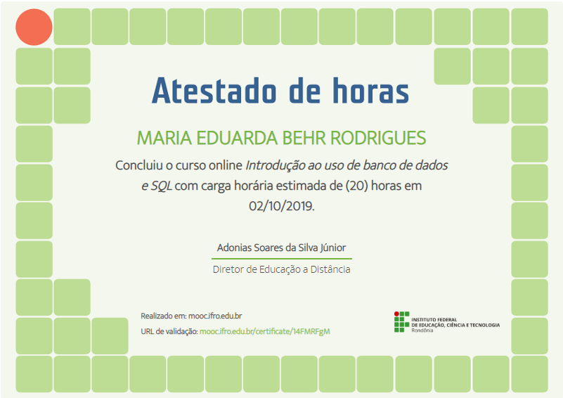
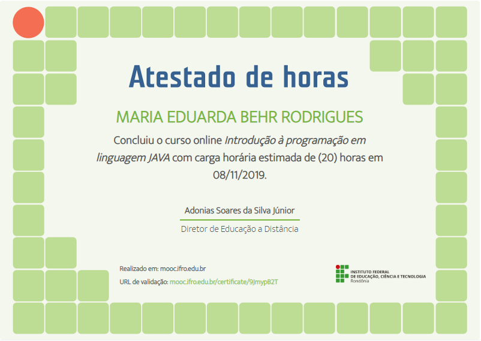

Estudo no IFRO (Instituto Federal de Rondônia), e estou no terceiro e último ano. Entrei por causa da qualidade de ensino e técnico.
Em meu primeiro ano entrei no grupo ADA CODE, projeto "Meninas Digitais", que visa a inclusão e maior particapação da mulher na programação.
No segundo ano participei do projeto PET SHOP, que unia as máterias técnicas para um único trabalho. No mesmo ano fiz estágio no DINTEL (Departamento de Informática e Telecomunicações) da Polícia Civil.
Também no segundo ano fiz algumas visitas técnicas.
Infelizmente no terceiro e último ano estamos de quarentena, devido ao COVID - 19.

Introdução ao uso de de banco de dados e SQL

Introdução à programação em linguagem JAVA